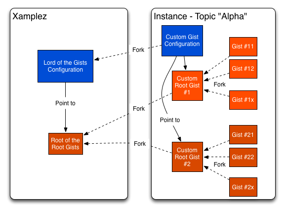

Help us build an OpenSource Knowledge Cluster of Code Snippets
View the Project on GitHub Xamplez/Xamplez
Ask public questions on Xamplez GoogleGroup
Contact us directly contact@xamplez.io
Help us build an OpenSource Knowledge Cluster of Code Snippets
Xamplez is based on a very simple idea:
I want to share code snippets (and nothing else) about a given topic with a simple description & be able to search them based on tags, ratings etc...
Our primary goal is to help people build their own stores of code snippets focusing on specific topics. The topic can go from very generic subjects such as programming language or frameworks to more specific ones such as very precise technical points or even funnier subjects. It's up to you to do what you want...
We were inspired by 140byt.es idea based on GIST but we wanted to go further in a more generic manner.
We aim at creating multiple instances of Xamplez.
We think one Xamplez's instance should focused on one topic as much as possible. But multi-topic instances can be considered naturally.
One Xamplez's instance is just a server but it doesn't store any code snippets: they are stored in Gists. The server is just there to discover and index the gists about your topic and provide a Search Engine. You can kill the server and re-launch it somewhere else and it will just be down meanwhile it re-builds the index.
Finally, to become a real Xamplez instance, we propose to adopt a very few common rules. As soon as you follow these rules and create a server instance, you are implicitly participating to the Xamplez's constellation.
One Gist to rule them all, One Gist to find them,
One Gist to bring them all and in the <PUT_WORD_YOU_LIKE>ness bind them
One Xamplez's instance requires to fork the Lord of the Gists that rules all the configurations of all instances!
The Configuration Gist must point to one (or more) Root Gist(s)
All code snippets concerning one topic(s) must fork the same Root Gist(s).
One Xamplez's instance can point to one or more Root Gist(s).
As you can imagine, using the great power of Github API, from your Root Gist(s), you can then find all code snippets about your topic.
Taking this rule into account, we have built current github project to help you kickstart your own instance of Xamplez.io for your own topic(s).
First of all, we made Xamplez.io completely opensource, nothing hidden. We want people to contribute to it, to improve it & to fork it for their own needs and things we haven't imagined yet.
We'd just like to keep a link between all forks/instances (following the forks of Lord of the Gists) because we aim at building an opensource knownledge cluster based on Gist and improve the concept progressively.

So, for now, Xamplez.io provides out-of-the-box:
It's the father of all Configuration gists to be able to re-find all existing instances of Xamplez.
When you create a new instance of Xamplez, you should just fork this gist.
It's used to store all custom configurations for Xamplez instance and specially the link to the Root Gist(s) of your instance.
In this configuration, you can store one or more files:
Just remember one thing:
One topic = One group of Gists forking the same Root Gist
One instance of Xamplez can have several root gists.
This Root of the Root Gists isn't mandatory but it provides a default template and we encourage forking it when you start a new topic.
This Gist is based on 4 files:
code that can be renamed with your extension: for ex, code.scala
README.md containing xamplez guide explaining how to write code snippets_License.txt containing a potential license for your codemeta containing metadata used by xamplez.io backendThis is an autonomous server capable of building a code snippet search engine starting only with the ID of your Root Gist. It's based on:
Please note that we don't impose anything about the backend and you can implement it as you want. But naturally, our default implementation provides the default mechanisms and our vision. So, we'd like people to improve this default implementation and contribute to the github project so that everyone can take advantage of the same well built backend and build an instance very quickly.
We will progressively document our backend implementation and specially the use of the configuration Gist which is quite cool to customize your instance very easily.
xamplez.io
We would like to gather all Xamplez instances under this domain xyz.xamplez.io. It's not mandatory but we think it would be cool ;)
Xamplez Core Server is licensed under classic Apache2 which provides the freedom we expect and will maintain the link between core projet and its forks.
conf/application.conf in the parameter gist.roots=[ GIST_ID, ...]
If you accept to link your instance to original xamplez.io, contact us at contact@xamplez.io so that we create a subdomain for your instance in xamplez.io
Topic foobar => sub-domain foobar.xamplez.io
If you want to contact us : contact@xamplez.io
(in alphabetic order)